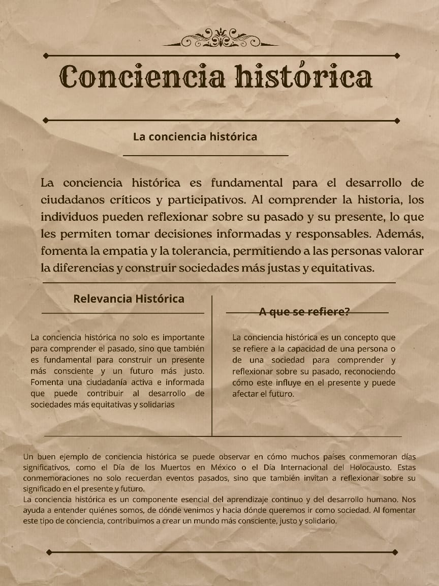

La importancia de la conciencia histórica en la Nueva Escuela Mexicana radica en la necesidad de formar ciudadanos conscientes de su pasado y capaces de construir un futuro mejor
La Nueva Escuela Mexicana busca implementar un enfoque pedagógico más integral y contextualizado, que promueva la reflexión crítica y el estudio de la historia de México como herramienta para comprender la realidad social, política y económica del país. Además, este enfoque se puede entender a través de las 7 etapas de la conciencia, que permiten desglosar cómo los individuos desarrollan una comprensión más profunda de su historia y su impacto en el presente.
